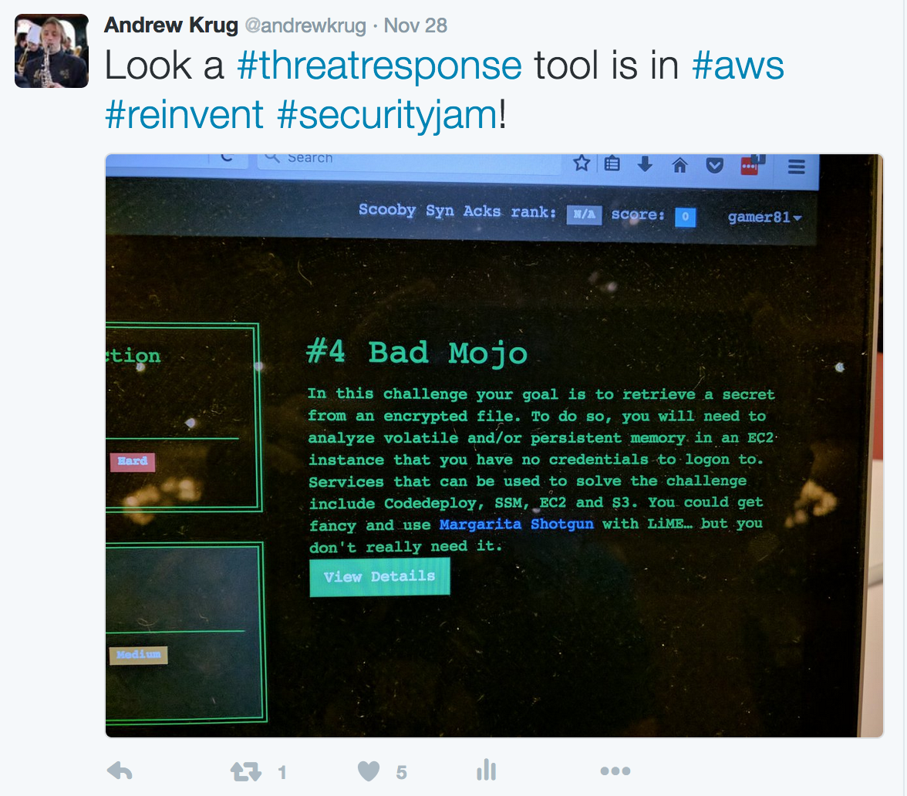
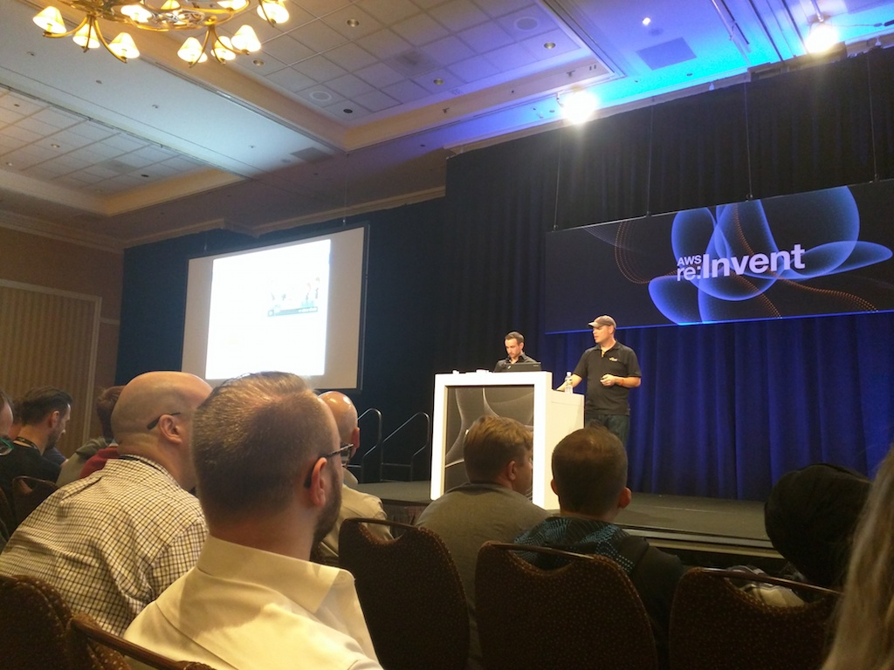

title: ThreatResponse at re: Invent date: 2016-09-30 06:45 UTC tags: amazon web service reinvent blog: “blog”
Things have been quiet on the blog through Amazon re: Invent. It’s not due to the fact that we don’t want to blog! We want to update you on what’s going on with ThreatResponse and the IR tools.
There’s been so much great content here at Amazon re: Invent.
We’re in the process of some major refactor of our tool suite! A few things are broken at the moment. Check out our development branches though for latest features and what we’re working toward.
Here are my personal highlights from the conference:
I made a point to attend the Security Jam a security simulation exercise where I competed with 200 other attendees in a defensive CTF locking down servers and serverless architecture.
A big surprise !

A ThreatResponse tool was featured in one of the CTF Challenges. We were so excited! Special thanks to the challenge designer.
I attended the latest incarnation of Don “Beetle” Bailey’s presentation SEC313 ( I’ll link it here when it’s posted online. ) During this presentation we were dazzled by automated penetration tests using the Dash Developer Button https://aws.amazon.com/iotbutton/ and wow'ed by the first live demo of a security-tool suite for the Amazon Echo-Dot powered by Alexa. Beetle and team demonstrated running Amazon Inspector via Alexa to show off what is possible.
I was even inspired to try and re-create the demo for all of you. After a few minutes of reading I discovered the ease of creating an Alex Skill. Look for future blogs on building your own Jarvis with Alexa.

See it on youtube in action
https://www.youtube.com/watch?v=SfmEsjhmYVg&feature=youtu.be
We got another big surprise and huge compliment being mentioned as a “Cool” project in SEC313.

Long story short re: Invent continues to be better than I ever expected. Three words uplifting, educating, and inspring! In a lot of ways this is the anniversary of ThreatResponse since ThreatResponse was inspired by a Don “Beetle” Bailey presentation on Security Automation.